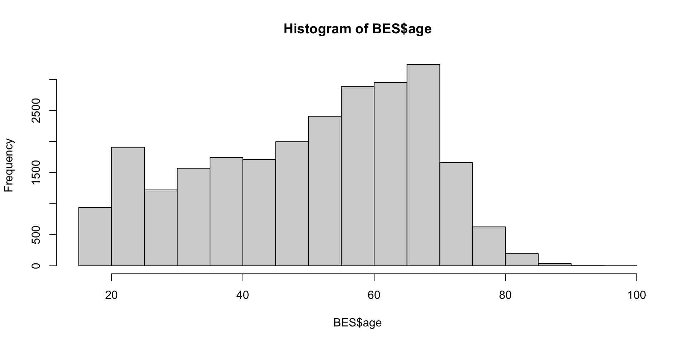
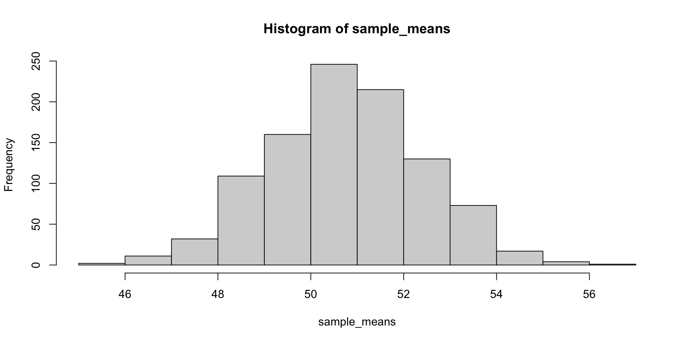
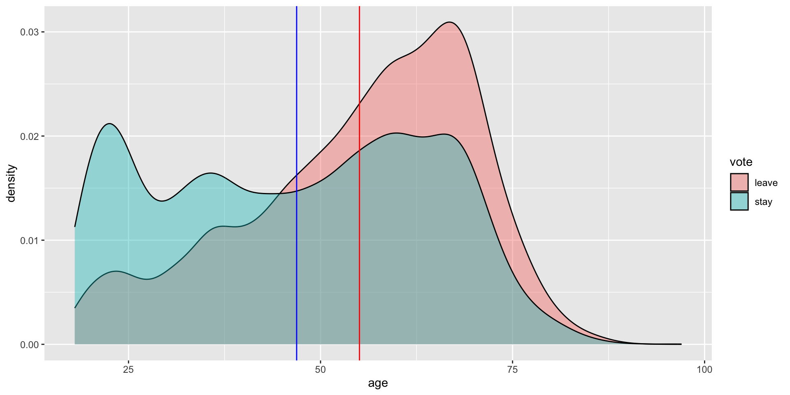

[1] 0.015625W3L2: Comparing Variables
POLS 642 Intermediate Analysis of Political Data
Dr. Ches Thurber
Get Started
1) Follow link on Blackboard to download W3L2_Comparing_Variables.zip
2) “Unzip” it and get the files set up in your file directory the way you want them
3) Open up your R Project
Big Picture
Today: Describing Two Variables
Fri: Data Camp Due (Probability, Hypothesis Testing)
Tue: Fitting Regressions
Thur: Hypothesis Testing Regressions
Fri: More Data Camp
Plan for Today
1) Recap Hyp Testing and Conf Intervals
2) Means and Normal Distributions
3) T-Distributions
3) Comparing Two Variables
Recap
Descriptive Inference
Descriptive Inference: estimate the characteristics of the population based on the sample
We have in our hands a sample, we can calculate descriptive statistics, plot its distribution, etc…
But what we really want to know about is the population
Core Problem
- we can know the probability of a model/distribution producing a certain outcome
- we cannot know the probability of a model being true given an outcome
What to do?
“One thing that is a bit easier to do is to learn whether certain theoretical distributions are unlikely. Maybe we can’t figure out exactly what the theoretical distribution is, but we can rule some stuff out.”
- The Effect
What to do?
Hypothesis Testing approach: Set a “null hypothesis” about the population parameter and ask: “If the null hypothesis were true, how likely is my sample?”
Confidence Intervals: Identify the range of population parameters from which drawing your sample would be reasonably likely
They are both mathematically the same: If the null hypothesis is not within the confidence interval, you would reject the null!
Hypothesis Testing approach
establish null hypothesis of what a core characteristic of the theoretical distribution of the population might be (e.g. its mean or its \(\pi\))
calculate probability of drawing a sample from the null hypothesis’s theoretical distribution with core characteristic of your observed sample
reject the null hypothesis when the probability of drawing a sample with the observed characteristic as extreme as yours is small (often \(\alpha = 0.05\))
Hypothesis testing the Coin flip
Null Hypothesis: The coin is “fair” (i.e. the population distribution is binomial with \(\pi\) = 0.5)
Alternative Hypothesis: The coin is not fair (i.e. \(\pi \neq .5\))
- Because .016 < .05, we reject the null, and accept the alternative hypothesis: Thurber is a liar!
Polling
Let’s Look at Today’s Rasmussen Poll
1500 respondents
47% approve of Trump
52% disapprove
Calculating the Test
What’s the probability of getting an approval rating of 47% or less (or 53% or more) if the real approval rating were 50%, with a sample size of 1500 under the conditions of the null?
Can we reject the null?
A Different Way
What if, instead of asking whether or not our sample is a reasonably likely outcome from one specific theoretical distribution, we asked, “What is the range of theoretical distributions from which our sample is a reasonably likely outcome?”
To put it differently, “what is the set of null hypotheses that we would fail to reject?”
What are the values of \(\pi\) for which our sample statistic falls within the 95% of most probably outcomes
Calculating the Bounds
What is the lowest actual Trump approval rating for which 47% still has a 2.5% chance of occurring?
What is the highest actual Trump approval rating for which 46% still has a 2.5% chance of occurring?
Our sample of 47% approval is reasonably likely if the actual population \(\pi\) of people who support Trump is anywhere between 44.5% and 49.5% (i.e. \(\pm\) 2.5%)
Continuous Variables and Normal Distributions
Back to BES
Distribution of Ages
Is this normal?!?
Distribution of Sample Means
Central Limit Theorem
As you take more samples, the distribution of the sample means converges on a normal disribution with:
a mean that is the same as that of the population (\(\mu\))
a standard deviation (standard error) that is that of the population divided by the square root of the size of the samples:
\[ \frac{\sigma}{\sqrt(n)} \]
this is true no matter the underlying distribution
Standard Deviation vs. Error
a standard deviation is a parameter of a population or a statistic we can calculate from a sample that measures the dispersion of a variable from the mean
the standard error is the the standard deviation of the distribution of sample means when drawing repeated samples from a population
the standard error is always smaller than the standard deviation
its size depends on the standard deviation of the population and the size of the samples we are drawing
Sample Mean and Sample Std. Dev
What’s the average age of the British voter?
What about the population of British Voters?
let’s take our whole BES dataset as the sample
the population is all British voters
could the average age of all British voters be 50.5?
Let’s Look at the Normal Distribution

What we know from the Normal Distribution
we know that 95% of sample means will fall within about two standard errors of the population mean
So if the population mean \(\mu\) were 50.5, then we would expect 95% of surveys of 25097 British voters to fall between two standard errors of 50.5
what’s the standard error for our survey of 25097?
Interpretation
If the population mean were 50.5, we would expect 95% of surveys of 25k voters to produce sample mean ages between 50.3 and 50.7
Our sample mean of 50.64 is within that range, so we conclude that 50.5 is possibly the average age of the population of British voters
Calculating the p-value
We could formally calculate the probability of getting a sample as extreme as ours (50.64 or higher, or 50.36 or lower):
We also know that the confidence interval, that is the set of population means for which our sample mean falls within two standard errors is 50.64 \(\pm\) 0.2, or 50.44-50.84
The T-Distribution
A catch
Wait, wait, wait!
The standard error formula contains \(\sigma\) which is the standard deviation of the population
I don’t actually know this! (Just like I don’t actually know the population mean)
I cheated and plugged the sample standard deviation in for the population standard deviation
What to do instead
actually, this is an okay assumption to make! BUT, it requires that we use the t-distribution rather than the normal distribution
the t-distribution is a lot like the normal distribution, it just has “fatter tails” for smaller sample sizes
it accounts for the fact that our sample standard deviation is more likely to vary from the population when our sample size is small
the “two standard errors away from the mean” rule of thumb is still pretty accurate
A formal calculation with the t-distribution
Comparing Two Variables
Conditional Means
what if we wanted to know the average age of voters who intend to vote stay? who intend to vote leave?
this is called a conditional mean
Visually
Calculate Standard Error
Standard error: \(\frac{s}{\sqrt{n}}\)
Calculate Confidence Intervals
Ask R to formally calculate the value of t that yields a p < 0.025 for sample sizes of 11843 and 13254 (degrees of freedom)
CI = \(\bar{x} \pm t * se\)
As a shorthand, just use t=2!
Confidence Intervals
Leave: 55 \(\pm\) .27 (54.73 - 55.27)
Stay: 47 \(\pm\) .30 (46.70 - 47.30)
Rule of thumb: if the mean of one condition is not within the confidence interval of the other, you are able to say that the difference in the means of the two groups is statistically significant
Hypothesis Testing
Null hypothesis: the means of the ages of stay and leave are the same
Null hypothesis: the mean of stay - the mean of leave = 0
Test Statistic for comparing two means
- test statistic: \[ \frac{\bar{x}_1 - \bar{x}_2}{\sqrt{\frac{s_1^2}{n_1} + \frac{s_2^2}{n_2}}} \]
t.top <- mean.stay-mean.leave
t.bottom <- sqrt(((s.stay^2)/n.stay) + ((s.leave^2)/n.leave))
t.top/t.bottom[1] -40.09589- the difference in means divided by the joint standard error (accounting for the fact that there are differences in variance and size between the samples)
Calculate P-value
according to the t-distribution, what is the probability of a t-statistic less than 40?
An Easier Way!
Welch Two Sample t-test
data: BES$age[BES$vote == "stay"] and BES$age[BES$vote == "leave"]
t = -40.096, df = 25064, p-value < 2.2e-16
alternative hypothesis: true difference in means is not equal to 0
95 percent confidence interval:
-8.578017 -7.778444
sample estimates:
mean of x mean of y
46.89000 55.06823